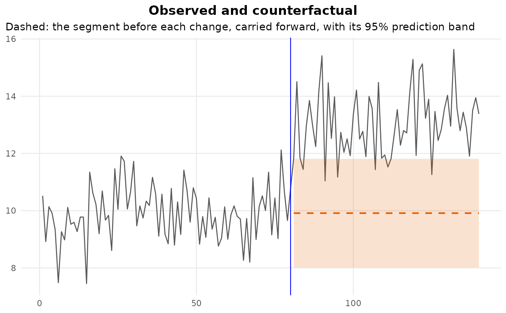

What would have happened without the change? Observed against counterfactual
Source:R/counterfactual.R
cpt_counterfactual.RdFor each changepoint, carries the segment before it forward over the segment after it, using that segment's own model, and sets the prediction beside what was observed. The gap is the effect of the change, observation by observation, in the units of the data: the interrupted-time-series exhibit.
Usage
cpt_counterfactual(
fit,
model = NULL,
data = NULL,
engine = stats::lm,
level = 0.95,
...
)
# S3 method for class 'ggcpt_counterfactual'
print(x, ...)
# S3 method for class 'ggcpt_counterfactual'
tidy(x, ...)
# S3 method for class 'ggcpt_counterfactual'
glance(x, ...)
# S3 method for class 'ggcpt_counterfactual'
autoplot(object, ...)Arguments
- fit
A
ggcptobject.- model, data, engine, ...
Passed to
cpt_segment_models(): the model fitted to each segment (by default its level, its line for a change in slope, or the formula of a formula fit), covariates it uses, and the fitting function.- level
Level of the prediction interval around the counterfactual. Defaults to
0.95.- x
A
ggcpt_counterfactualobject.- object
A
ggcpt_counterfactualobject.
Value
A ggcpt_counterfactual tibble with one row per
observation after each changepoint, up to the next: cp (the
change it belongs to), position, index (the time index,
or the position when there is none), observed,
counterfactual, lower and upper (the prediction
interval, NA when the model supplies none) and effect
(observed - counterfactual). autoplot() draws the series
with each counterfactual and its band; glance() gives one row
per change with the mean and cumulative effect; print() and
tidy() work as usual.
Reading it
The counterfactual is a prediction from the pre-change segment alone, so
its interval widens the further it is carried: a level is carried at
constant width, a line fans out. The interval describes the
pre-change model's uncertainty, not the location's: the changepoint is
taken as given, and cpt_confint() is the place to ask how
sure that location is. Where the detector chose the location from the
same data, the effect is the naive one, and cpt_effect()
measures it on held-out observations instead.
See also
cpt_effect(), cpt_segment_models(),
predict.ggcpt().
Other segment models:
cpt_segment_models(),
predict.ggcpt()
Examples
set.seed(2026)
x <- c(rnorm(80, 10), rnorm(60, 13))
fit <- cpt_detect(x, method = "pelt", change_in = "meanvar")
cf <- cpt_counterfactual(fit)
glance(cf)
#> # A tibble: 1 × 5
#> cp n mean_effect cumulative_effect share_outside
#> <int> <int> <dbl> <dbl> <dbl>
#> 1 80 60 3.14 188. 0.883
ggplot2::autoplot(cf)
